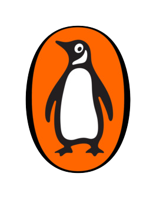
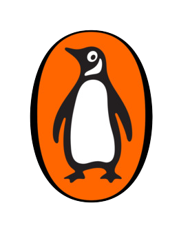

The meeting point for the world's top nonfiction writers/speakers with human-knowledge passionates from over 50 countries is residing in March, in México.
The Global Nonfiction Apex brings together a community of nonfiction passionates from different backgrounds in different countries every year.
As with every year, we hope to be the place where important nonfiction writers share their new ideas about their books and the genre itself as well as the place for readers to find new inspiration in the stories told within the books.
If you are a nonfiction follower or advocate - starting writer, keen reader, small publisher, book critic, or just someone who wants to learn and spend enrichment time - we hope you find motivation with us.
Feel free to contact us through email for any questions you may have about ®Global Nonfiction Apex 2022!
contactus@globalnonfiction.com
Our logo was decided through the logo contest holded from 6.November to 7.December.
Take a look at the last two Global Nonfiction Apexs which took place in Santiago de Chile and in Toronto.

Global Nonfiction Apex in Santiago de Chile
Global Nonfiction Apex in Toronto
 
